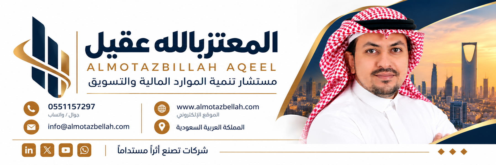

ابتكار وتطوير المشاريع
تحويل أفكار المنظمة إلى مشاريع ومبادرات قابلة للتنفيذ والتسويق، تسهم في تحقيق استدامتها المالية.

خدمات استشارية للمنظمات غير الربحية تركز على ابتكار وتطوير المشاريع، وتسويقها للشركات ورجال الأعمال لاستقطاب التمويل والرعايات والشراكات.
قيادي تنفيذي ومستشار تطوير أعمال بخبرة 15 عامًا في إدارة الشركات والعمليات وتطوير المشاريع، متخصص في الاستراتيجية، تحسين الأداء، تنمية الإيرادات، إدارة الفرق والشراكات، مع خبرة في قيادة وإدارة شركات محلية ودولية.
من تطوير الفكرة إلى تقديم المشروع للسوق وبناء فرص التمويل والرعاية والشراكة.
تحويل أفكار المنظمة إلى مشاريع ومبادرات قابلة للتنفيذ والتسويق، تسهم في تحقيق استدامتها المالية.
تسويق مشاريع المنظمة للشركات ورجال الأعمال لاستقطاب التمويل والرعايات والشراكات.
مشاريع قابلة للتنفيذ • فرص للتمويل • والشراكات
خبرة تنفيذية واستشارية لأكثر من 15 عامًا
خبرة في قيادة وإدارة شركات محلية ودولية
تخصص واضح في تطوير المشاريع وتسويقها واستقطاب الفرص
خطوات عملية لتنويع مصادر الإيرادات وبناء شراكات أكثر استدامة.
اقرأ المقال ←من عرض الاحتياج إلى صياغة قيمة واضحة تجذب الشريك المناسب.
اقرأ المقال ←أولويات عملية للبدء بسرعة وبناء مسار واضح للنمو.
اقرأ المقال ←للاستشارات في ابتكار وتطوير المشاريع وتسويقها واستقطاب الرعايات والشراكات.